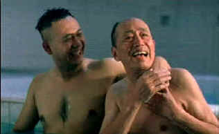

| Shower/A,B+ |
| Columbia/2000/94/ANA
1.85 |
Shower is a wonderful film about
family and putting things in perspective. In a Northern China there is a bathhouse in
a section of the old city. It's run by a man and his retarded son and is an important part of the community for
many of the old timers and some younger men as well. The stories we hear about in the bathhouse are
funny and poignant. Old man Liu who runs the place is a wonderful character, a
sagacious master of the water. And he knows how precious water is.
 |
| A happy bath house moment. ©Columbia |
Behind the misty atmosphere of the local bath house is a
heartwarming story of family. Part and parcel of the mist of the bath house is
concern for one's friends. The mist of the bath house is steeped in warmth and
heart that goes far beyond the social surface. Er Ming is the younger son of
bath house owner Master Liu. When the older brother Da Ming returns home in
response to a letter from his brother, it is a chance for the family to explore
their damaged relationships. Faced with personal and business turning points,
the brothers must come to grips with differing realities. How they work out
their problems and help with the problems of others makes a great story.
The savvy script by director Zhang Yang and a team of
collaborators provides many humorous moments to frame to humanize the drama.
Zhang's direction is sure-handed. While he plays with emotions, he's never
heavy-handed. He respects his character and their differences. The opening is
simply hilarious. There's also a lovely digression from the main story that
relates the tale of a people in the northwest of China for whom water is scarce
and precious. It's lovely
filmmaking.
Wu Jiang plays sunny Er Ming with extraordinary brio.
Despite his handicap, you are never sorry for him, for he understands himself
quite well. Jiang manages to search deep inside this character revealing some
wonderful aspects. Quanxin Pu has the more difficult task of bringing to life
the dower older brother Da Ming. The doubts his character must deal with are
well constructed by the actor. Together, he and Jiang are outstanding. Xu Zhu
plays father Master Liu with patience and intelligence. The three actors create
a memorable on screen family.
Columbia delivers Shower in a splendidly clean DVD.
Every glistening drop of water is well delineated. You can catch the spark of
life in Er Ming's eyes or understand the love reflected in Master Liu's
expressions. Color is excellent.: good saturation and a nice range. Skin tones
are accurate. Night sequences glisten with life. Shadow detail is excellent and
grain is replicate din tight patterns. The Dolby Digital 5:1 surround delivers
the package of music and ambient details with nice spatial balance. Yellow
English subtitles are easy to read and seem to communicate the feelings of the
characters quite well.
|
|
|
|

Jou Du/A,B-

A sexy Chinese noir. Bold colors paint stirring emotions in a small
provincial town.

Selections from the Feature Archive include articles on
Akira Kurosawa, Blonde Bimbos,
Frank
Darabont, Steven Culp,
John
Herzfeld or Vietnam: The
Hollywood Pariah, and many more....
The
Exquisite Muse of Zhang Yimou

The powerful image-making of Zhang Yimou has revealed itself in
virtually every film he has made. Coupled with his remarkable collaboration with actress Gong Li,
Zhang's has built a stunning body of work Click the image to read all about it.

 Gary Morris's insightful publication Bright Lights
Film Journal turns the celluloid in films from a unique perspective. Click on the image above
for more pure movie views. Gary Morris's insightful publication Bright Lights
Film Journal turns the celluloid in films from a unique perspective. Click on the image above
for more pure movie views.
 Kinoeye Archive Kinoeye Archive
This is a resource of all content-rich
materials on the web relating to Central and East European cinema. The ultimate aim of the Kinoeye
Archive is to provide a near-as-damn-it definitive index of intelligent and thoughtful
English-language analysis of Central and Eastern European cinema on the web.

DVD
Demystified makes it all clear. The official Internet DVD FAQ for the rec.video.dvd
Usenet newsgroups.
|